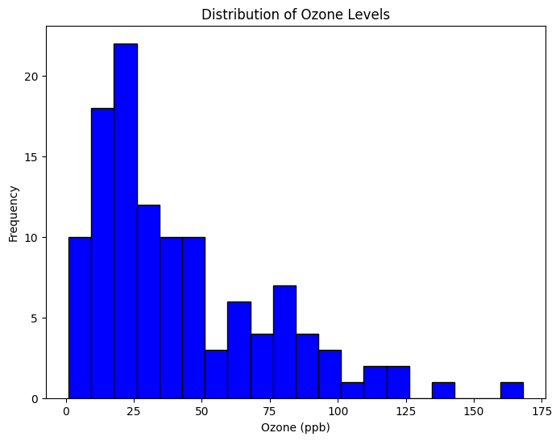

5 Toluwanimi Olufawo
This page contains all of Toluwanimi Olufawo submissions this semester organized into different sections.
5.1 Monday
5.1.1 Week 1
5.1.2 Week 2
5.1.3 Week 3
Monday Tableau Tutorial
Monday September 9, 2024
In Monday’s class, we learned how to use Tableau Public. We began by downloading and installing the software or using the web version. We then imported the dataset (airquality_datasets.csv) and cleaned the data by checking for missing values and renaming columns.
Importing the Dataset: After opening Tableau Public, I clicked on “Connect to Data,” selected “Text File,” and navigated to the dataset (airquality_datasets.csv). Then I clicked “Open” or dragged and dropped the file.
Visualization:
Bar Chart for Average Ozone Levels by Month: We dragged ‘Month’ to Rows and ‘Ozone’ to Columns, then aggregated Ozone as an average. If Tableau didn’t automatically create a bar chart, we changed the Marks type to Bar and renamed the sheet tab. Line Chart for Ozone Levels Over Days: In a new worksheet, we dragged ‘Day’ to Columns and ‘Ozone’ to Rows, creating a line chart, and explored properties like color. Scatter Plot for Temperature vs. Ozone: We created a new worksheet, dragged ‘Temp’ to Columns and ‘Ozone’ to Rows. If Tableau defaulted to a Measure, we changed each pill to Dimension. If not showing a scatter plot, we selected Shape in the Marks tab. Map Visualization: Since our dataset didn’t include geographical data like Latitude and Longitude, we skipped this step.
Creating a Pivot Table: In a new worksheet, we dragged ‘Month’ to Rows, ‘Day’ to Columns, ‘Ozone’ to Color, and ‘Ozone’ to Size. We observed the resulting pivot table and experimented with the added dimensions.
Building a Dashboard: We clicked on the New Dashboard button, dragged and dropped our created sheets onto the dashboard area, arranged them cohesively, and added interactivity using filters and actions. We reviewed the ozone vs. day line plot and considered improvements or fixes.
Conclusion
In this class , we gained hands-on experience with Tableau Public, from importing and cleaning data to creating a variety of visualizations, including bar charts, line charts, scatter plots, and pivot tables. We also learned how to build interactive dashboards to present our findings in a cohesive way. These skills will be useful for analyzing and visualizing complex datasets, making it easier to draw insights and communicate results effectively.
Monday Diamond Tableau Tutorial
September 9, 2024
Introduction The Diamonds dataset is widely used for statistical analysis and data visualization, providing information about various attributes of over 50,000 diamonds, such as their carat weight, cut quality, clarity, and price. The aim of this assignment is to clean the dataset, check for any missing values, and create meaningful visualizations using Tableau
Importing the Dataset:
Steps to Import the Dataset:
Opened Tableau and go to File > Open to upload the “Diamonds Dataset (ggplot2).csv.”
Navigate to File > Open and select the diamonds_ggplot2.csv file to import the data.
Cleaning the Dataset The data set does not have any missing values, but i ensured all the data types are correct. Ensure Data Types Are Correct: Carat: Number (decimal) Cut: String Color: String Clarity: String Depth, Table, Price, X, Y, Z: Numbers
Creating Visualizations
1. Bar Chart: Average Price by Cut To explore how diamond prices vary based on their cut quality, I created a bar chart showing the average price for each cut category This chart will show how the average price varies based on the cut quality of the diamonds.
Steps I Followed: 1.I dragged Cut to the Rows shelf. 2.Then, I dragged Price to the Columns shelf. 3.To see the average price instead of the sum, I right-clicked on Price, selected Measure, and changed it to Average.
This gave me a clear view of how diamonds with different cut qualities (Ideal, Premium, etc.) are priced on average.

2.Line Chart: Price Over Carat Next, I wanted to see how the price changes as the carat size increases, so I built a line chart for this.
Steps I Followed: 1.I dragged Carat to the Columns shelf. 2.Then, I dragged Price to the Rows shelf. 3.To adjust the chart type to a line, I switched the chart type to Line from the Marks card.
This line chart helped me visualize how diamonds with larger carat weights tend to have higher prices, showing a clear upward trend.

3. Scatter Plot: Price vs. Carat To get a more detailed look at the relationship between carat weight and price, I created a scatter plot. This allowed me to see the individual diamond data points more clearly.
Steps I Followed: 1.I dragged Carat to the Columns shelf. 2.Then, I dragged Price to the Rows shelf.
This generated a scatter plot that gave me a more granular view of how price is influenced by carat size. The scatter plot revealed the spread of data, showing how prices vary widely for diamonds of similar carat weights.

Creating a Pivot Table After visualizing the data, I wanted to summarize the diamond prices across different cut and color combinations, so I built a pivot table.
Steps I Followed: 1.I dragged Cut to the Rows shelf. 2.Then, I dragged Color to the Columns shelf. 3.Finally, I dragged Price to Text (or Label) to display the prices. 4.I right-clicked on Price and summarized it by Average to show the average price for each combination of cut and color This pivot table allowed me to easily compare prices across various cut and color categories.

Conclusion Through this assignment, I was able to successfully import, clean, and analyze the Diamonds dataset. By ensuring the data was properly cleaned and validated, I created several visualizations, including a bar chart, line chart, and scatter plot. Each provided valuable insights into how different attributes like cut and carat size influence diamond prices. Additionally, I summarized the data using a pivot table, which made it easy to see price variations across different cut and color combinations. Tableau’s flexibility allowed me to explore the dataset interactively, giving me a deeper understanding of the relationships within the data
5.2 Wednesday
5.2.1 Week 1
5.2.2 Week 2
September 4 2024
During class today, we learnt about how to create pivot tables using excel and how best to properly present our data to convey the information we found accurately.
Data Description/Selection By using the air-quality dataset, which contains air quality measurements collected from May to September 1973 in New York united states of America. This dataset includes:
- Ozone
- Solar.R (solar radiation)
- Wind (wind speed in mph)
- Temp (temperature in Fahrenheit)
- Month (May to September)
- Day (1 to 31)
Source
1.Open the Dataset: The data were sourced from the New York State Department of Conservation (for ozone data) and the National Weather Service (for meteorological data). I obtained an updated version of the airquality.csv file
2.Identify and Address Missing Values:
Data Cleaning Process: Fill or Remove Missing Values:
I cleaned the dataset using Excel by removing rows with missing values (NA) and performed exploratory analysis to reveal patterns and trends in ozone levels and other variables.
Variables to be evaluated In this dataset,i will be using the Temperature and ozone
Step 2:Creating a PivotTable
I selected the entire dataset using Ctrl+A, then went to the Insert tab and clicked on PivotTable. I chose to place the PivotTable in a New Worksheet and clicked OK. To set it up, I dragged Month to the Rows area, Day to the Columns area, and Ozone, Solar.R, Wind, and Temp to the Values area. I made sure each value displayed as an Average by clicking the dropdown next to each field in the Values area, selecting Value Field Settings, and choosing Average. Finally, I customized the PivotTable’s design using the Design tab and adjusted the number formatting by right-clicking on the data cells.
Step 3:Creating Visualizations Insert a PivotChart and Customize the Chart: I clicked inside the PivotTable, then went to the Insert tab and selected PivotChart. I chose the chart type that best suited my data, like a Line Chart for trends or a Bar Chart for comparisons, and clicked OK. To customize the chart, I used the Chart Tools to adjust the design, layout, and format, and added essential elements such as titles, axis labels, and legends to enhance readability.

Step 4: Experiment with Different Configurations
I clicked inside the PivotTable, then went to the Insert tab and selected PivotChart. I chose the chart type that best suited my data, like a Line Chart for trends or a Bar Chart for comparisons, and clicked OK. To customize the chart, I used the Chart Tools to adjust the design, layout, and format, and added essential elements such as titles, axis labels, and legends to enhance readability.

Ozone Histogram

The Ozone distribution shows a right-skewed pattern, indicating that most values are low, with a few high outliers. This could reflect variations in weather or pollution.
Scatter Plot: Ozone vs Temperature
There is a weak positive correlation between ozone and temperature, suggesting that higher temperatures tend to coincide with higher ozone levels, though other factors like wind or pollution likely contribute.
Average Ozone Per Day & Month
The highest ozone averages occur on May 25th and July 25th, with notable peaks also on May 29th and July 30th. July generally exhibits higher ozone levels, especially around the end of the month.
Solar Radiation and Temperature Variations

The chart reveals daily variations in solar radiation and temperature, peaking around days 18, 19, and 29. Both solar radiation and temperature are higher on these days, pointing to intense sunlight and warmth during these periods.
Conclusion
After setting up the PivotTable by selecting the dataset and placing it in a new worksheet, I configured it with Month in the Rows, Day in the Columns, and used Ozone, Solar.R, Wind, and Temp, showing their averages in the Values area. I tweaked the design and number formatting to make it look cleaner. Then, I inserted a PivotChart based on the table, chose the best chart type for my data, and added titles and labels for clarity. To wrap it up, I explored different configurations by switching variables around, like moving Temp to the Axis and Average Ozone to the Values, to see which setup gave the best visual insight into my data. This process helped me organize and present the information in a clear, visually appealing way.
5.2.3 Week 3
Wednesday Advanced Tableau Public Tutorial
September 11,2024
In Wednesday’s class, we learned how to implement what was learnt in Tableau Public on Monday at a more advanced level. We began by opening the Tableau public website.
Importing the Dataset:We then imported the dataset (diamonds_ggplot2_datasets.csv) and cleaned the data by checking for missing values and renaming columns.There weren’t any missing data and NA in the dataset. After opening Tableau Public, I clicked on “Connect to Data,” selected “Text File,” and navigated to the dataset (diamonds_ggplot2_datasets.csv). Then I clicked “Open” or dragged and dropped the file.
Calculated Fields
To enhance my analysis skills, I created a new calculated field in Tableau Public. First, I navigated to Sheet 1, then from the top menu, I selected Analysis and clicked on Create Calculated Field. In the dialog box that appeared, I named the new field Price per Carat. To calculate this, I used the formula [Price] / [Carat]. After entering the formula, I clicked OK, and the new field was added to my dataset, allowing me to view price per carat for each diamond

2.Advanced Chart Types
Next, I created an advanced chart type, a boxplot, to explore the distribution of diamond prices based on their cut quality. To do this, I first dragged Price to the Rows section and Cut to the Columns section. Then, I opened the Show Me panel on the right side and selected Box Plot. To ensure that the price was treated as a discrete variable, I right-clicked on Price and chose Dimension. To visually distinguish between the different cut categories, I also dragged Cut to the Color shelf. This boxplot now allows me to hover over each category to see details about the price distribution for each cut.


3. Dual-Axis Charts
To compare Price and Carat on a dual-axis chart, I began by dragging Cut to the Columns section. Then, I added Price to the Rows, followed by Carat just below it. Afterward, I right-clicked on the Carat axis and chose Dual-Axis to overlay the two measures on the same chart. To ensure both axes were aligned properly, I right-clicked the axis again and selected Synchronize Axis. Finally, I adjusted the Marks card from Automatic to Line, which allowed me to visualize the relationship between diamond prices and carat weight in a more coherent manner.


4. Using Parameters
To dynamically filter my dataset based on price, I created a parameter that allows for flexible threshold adjustments. First, I right-clicked in the Data pane and selected Create Parameter. I named it Price Threshold, set the data type to Float, and chose a default value of 500. After clicking OK, I right-clicked the parameter again in the Data pane and chose Show Parameter Control to make it visible on the dashboard.

Next, I created a calculated field by right-clicking in the Data pane and selecting Create Calculated Field. I named this field Price Greater than Threshold, with the formula [Price] > [Price Threshold]. After clicking OK, I applied this calculated field as a filter by dragging it to the Filters shelf. In the Filter Field dialog, I selected True to display only records where the price exceeded the threshold. This setup allows the plot to dynamically update as I adjust the price threshold using the parameter.


Creating an Interactive Dashboard with Actions
To make my dashboard both visually appealing and interactive, I began by dragging and dropping the relevant sheets onto the dashboard to showcase my visualizations. I arranged the sheets thoughtfully to ensure the data story was clear and engaging.
Next, I added a Filter Action to make the dashboard responsive. I went to the top menu, selected Dashboard, and clicked on Actions. From there, I chose Add Action -> Filter. In the dialog box, I defined the source sheet, which would act as the filter, and the target sheets, which would be filtered based on the selection. I fine-tuned the settings by choosing the filtering behavior—I opted for filtering based on selection, and also ensured that clearing the selection would reset all values.
To further enhance interactivity, I added a Highlight Action. Again, I went to Dashboard -> Actions and selected Add Action -> Highlight. I chose which sheets should act as the source and target for the highlights, and customized the settings to highlight specific dimensions that I wanted users to focus on.
To personalize the dashboard, I used various tools and techniques to adjust the layout, added titles, and formatted the dashboard to align with my data storytelling goals. I made sure the filters and highlights interacted smoothly with the visualizations by testing the interactivity.
Once everything was in place, I published the dashboard by selecting Save to Tableau Public from the File menu. I then shared the link with my class to showcase my work.
5.3 Friday- Midterm Projects
5.3.1 Week 1
5.3.2 Week 2
5.3.3 Week 3
Week3 Friday&Saturday Excel Project Dataset Olufawo_09/13/24
Continuation of the Geoheritage Sites of the Nation Dataset
This week, we are continuing to explore the Geoheritage Sites of the Nation dataset, which offers a detailed inventory of important geological sites across the United States and its territories. The dataset emphasizes locations that are recognized for their scientific, educational, cultural, economic, and aesthetic importance.
Advanced Tableau Public Tutorial
With the Geoheritage Site datasest anaylsing the dataset even futher we would be doing some more exploartion on the dataset.
In this advanced tutorial on the Geoheritage Sites dataset, we will dive deeper into Tableau’s features by exploring calculated fields, advanced chart types, parameters, table calculations, and creating complex, interactive dashboards with action filters for enhanced analysis
Create a Calculated Field To begin, open the worksheet (Sheet 1) where the calculated field will be added. Next, navigate to the top menu and select Analysis. From the dropdown menu, choose Create Calculated Field.
A dialog box will appear where you can provide a name for the calculated field. For instance, if you are calculating total geographical coordinates, you might name it how you prefer , i named it “Total Geo Coordinates.”

In the formula box, input the desired calculation. For example, to compute the sum of latitude and longitude, I used the formula: SUM(Lat DD) + SUM(Long DD).
Once you’ve entered the formula, click OK to save the calculated field. The new field will now appear in the data pane and can be used in your visualizations.
**Advanced Chart *Types**
Steps for Advanced Chart Types using Geoheritage Dataset:
To explore the geographical data distribution in the Geoheritage dataset, I followed these steps to craft an interactive boxplot and gain deeper insights into the data:
Step 1: Drag ‘Lat_DD’ (Latitude) to Rows I started by dragging the Lat_DD field into the Rows section. Since this field represents the latitude of each geoheritage site, it forms the foundation of the boxplot, showcasing the spread of geographical data.

Step 2: Select ‘TYPE’ as the Categorical Field and Drag to Columns To break down the geographical data, I dragged the TYPE field (representing different site categories) into Columns. This step helped me visualize how latitude varies across different geoheritage site types. You could also use COUNTY or STATE depending on your analysis focus.

Step 3: Create the Boxplot from the ‘Show Me’ Panel From the Show Me panel, I selected the Box Plot option. The boxplot beautifully summarized the latitude distribution across the categories, highlighting key statistical insights.

Step 4: Converion of ‘Lat_DD’ from a Measure to a Dimension Right-clicking Lat_DD in the Rows shelf, I converted it from a measure to a dimension. This allowed the latitude values to behave as discrete data points within each category, enhancing the clarity of the comparison.
Step 5: Enhance with Color Coding for Better Clarity After adding TYPE to the Columns shelf, I dragged it to the Color shelf on the Marks card. This color-coding brought the categories to life visually, making it easy to distinguish between them at a glance.

Step 6: Dive into the Interactive Boxplot Hovering over each boxplot allowed me to see a detailed breakdown of statistics, including the minimum, quartiles, median, and maximum latitude values for each category. The interactivity added a new dimension to my exploration, as I could compare latitudinal variations between site types effortlessly.
This approach gave me a dynamic and visual understanding of how geographical data varies across different categories within the Geoheritage dataset.
Dual-Axis Charts
Dual-axis charts are a powerful tool for visualizing two different measures on separate scales within the same graph. This allows for a clear comparison of how these measures vary across categories in the dataset. The following steps detail the creation of a dual-axis chart using the Geoheritage dataset.
Step-by-Step Process: Drag ‘TYPE’ to the Columns shelf Begin by dragging the TYPE field into the Columns shelf. This field categorizes the data by geoheritage site type, and it will be used to organize the chart along the x-axis.
Drag ‘Lat_DD’ (Latitude) to the Rows shelf Next, drag the Lat_DD field into the Rows shelf. This will be the first numerical measure plotted on the y-axis. Latitude provides geographic data, allowing us to analyze the spatial spread of the geoheritage sites.

Drag ‘AESTHETIC’ to the Rows shelf (below ‘Lat_DD’) Now, drag the AESTHETIC field to the Rows shelf, placing it directly below the Lat_DD field. This step creates a second y-axis, which will represent the aesthetic value assigned to each geoheritage site.
Right-click on the second axis (AESTHETIC) and select ‘Dual-Axis’ To overlay both y-axes on the same graph, right-click on the axis for AESTHETIC and select Dual-Axis. This allows both Lat_DD and AESTHETIC to be displayed on the same chart, making it easier to compare the geographical spread against the aesthetic value.
Change the aggregation to ‘Average’ Right-click on each measure in the Rows shelf (Lat_DD and AESTHETIC), and from the options that appear, choose Measure > Average. This ensures that the chart displays the average values for each measure across the different geoheritage site types.

Change the Marks type to ‘BAR’ For a more interpretable visualization, switch the Marks type to BAR. Click on the All section in the Marks card, and from the drop-down menu, select Line. This step will represent the trends of both latitude and aesthetic value using smooth, continuous lines.
 Creating Complex Dashboards Dashboards in Tableau allow you to combine multiple visualizations, and dashboard actions add interactivity through filters, highlights, and navigation.
Creating Complex Dashboards Dashboards in Tableau allow you to combine multiple visualizations, and dashboard actions add interactivity through filters, highlights, and navigation.
Step-by-Step Process: Create a New Dashboard
Click the New Dashboard button at the bottom of the workbook. Drag and drop your sheets (e.g., the dual-axis chart, boxplot) onto the dashboard. Add Dashboard Actions
Go to the Dashboard menu and select Actions. Click Add Action and choose from Filter, Highlight, or URL to add interactivity. Use the previously created filters, or configure the action by selecting the source and target sheets. Click OK to apply the action.
 Here’s a personalized conclusion for your report:
Here’s a personalized conclusion for your report:
Conclusion
With the use of advanced features like calculated fields, dual-axis charts, parameters, table calculations, and dashboard actions, I have developed a more interactive and insightful dashboard using the Geoheritage dataset. These tools greatly enhanced my data analysis, allowing for deeper exploration of geoheritage sites and their characteristics. This approach provides a clearer understanding of the data, enabling more engaging and informative visualizations. I’m excited to continue exploring and analyzing data using Tableau Public!
Below is the link to my DASHBOARD
5.4 Jupyter Notebook
5.4.1 Week 4
- Toluwanimi’s Notebook: This notebook contains the data cleaning and exploration tasks.
#This is a markdown title
In Markdown, we can create lists: - item 1 - item 2 - item 3
Also, we can create enumerated lists: 1. Hola 2. Hi 3. Namaste
We can bold text, and also italicize text.
# Here we are importing numpy with a nickname np
import numpy as np
print(np.absolute(-1))
arr = np.array([1, 2, 3, 4, 5])
print (arr)1
[1 2 3 4 5]# lists are native to python
my_list = [1, 2, 3, 4, 5]
print (my_list)[1, 2, 3, 4, 5]#We will be using a lot of dataframes , so we need pandas libary
import pandas as pd
data = {'Ozone': [41, 36, 12], 'Temp': [67, 72, 74]}
df = pd.DataFrame(data)print(df) Ozone Temp
0 41 67
1 36 72
2 12 74#load .csv files into **DataFrame**, we use pandas function **read_csv**
df = pd.read_csv(r'C:\Users\toluf\venv477\Scripts\airquality_datasets.csv')print(df.info())
print(df.describe())<class 'pandas.core.frame.DataFrame'>
RangeIndex: 153 entries, 0 to 152
Data columns (total 6 columns):
# Column Non-Null Count Dtype
--- ------ -------------- -----
0 Ozone 116 non-null float64
1 Solar.R 146 non-null float64
2 Wind 153 non-null float64
3 Temp 153 non-null int64
4 Month 153 non-null int64
5 Day 153 non-null int64
dtypes: float64(3), int64(3)
memory usage: 7.3 KB
None
Ozone Solar.R Wind Temp Month Day
count 116.000000 146.000000 153.000000 153.000000 153.000000 153.000000
mean 42.129310 185.931507 9.957516 77.882353 6.993464 15.803922
std 32.987885 90.058422 3.523001 9.465270 1.416522 8.864520
min 1.000000 7.000000 1.700000 56.000000 5.000000 1.000000
25% 18.000000 115.750000 7.400000 72.000000 6.000000 8.000000
50% 31.500000 205.000000 9.700000 79.000000 7.000000 16.000000
75% 63.250000 258.750000 11.500000 85.000000 8.000000 23.000000
max 168.000000 334.000000 20.700000 97.000000 9.000000 31.000000import matplotlib.pyplot as plt
# Ozone Histogram
plt.figure(figsize=(8, 6))
plt.hist(df['Ozone'].dropna(), bins=20, color='blue', edgecolor='black')
plt.title('Distribution of Ozone Levels')
plt.xlabel('Ozone (ppb)')
plt.ylabel('Frequency')
plt.show()

# Temp Histogram
plt.figure(figsize=(8, 6))
plt.hist(df['Temp'].dropna(), bins=20, color='orange', edgecolor='black')
plt.title('Distribution of Temperature')
plt.xlabel('Temperature (°F)')
plt.ylabel('Frequency')
plt.show()
# Boxplot for Ozone
plt.figure(figsize=(8, 6))
plt.boxplot(df['Ozone'].dropna())
plt.title('Boxplot of Ozone Levels')
plt.ylabel('Ozone (ppb)')
plt.show()

# Boxplot for Temp
plt.figure(figsize=(8, 6))
plt.boxplot(df['Temp'].dropna())
plt.title('Boxplot of Temperature')
plt.ylabel('Temperature (°F)')
plt.show()
import matplotlib.pyplot as plt
# Ozone Histogram
plt.figure(figsize=(8, 6))
plt.hist(df['Ozone'].dropna(), bins=20, color='blue', edgecolor='black')
plt.title('Distribution of Ozone Levels')
plt.xlabel('Ozone (ppb)')
plt.ylabel('Frequency')
plt.show()
# Temp Histogram
plt.figure(figsize=(8, 6))
plt.hist(df['Temp'].dropna(), bins=20, color='orange', edgecolor='black')
plt.title('Distribution of Temperature')
plt.xlabel('Temperature (°F)')
plt.ylabel('Frequency')
plt.show()